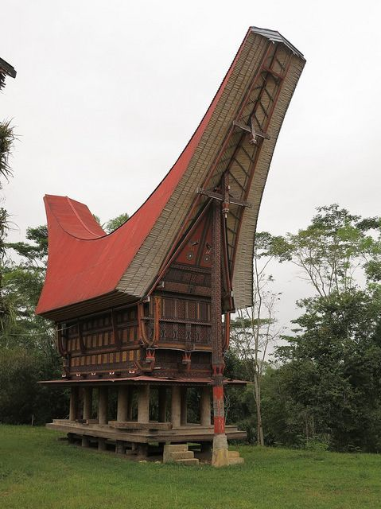

Arsitektur Tradisional Toraja
Tongkonan adalah rumah leluhur tradisional masyarakat Toraja di Sulawesi Selatan, Indonesia. Atapnya yang menjulang berbentuk perahu dan ukiran kaya mewakili kosmos yang terbagi menjadi tiga kerajaan suci — setiap bagian membawa makna spiritual dan sosial yang mendalam.

Klik pada bagian di bawah — atau gunakan tombol — untuk mempelajari setiap bagian struktural Tongkonan.
☝ Klik pada bagian manapun dari tongkonan untuk mempelajari lebih lanjut
Select a part of the Tongkonan above to see detailed information about it.
Pandangan detail tentang ketiga elemen struktural rumah Tongkonan.
Atap melengkung secara dramatis ke atas di kedua ujungnya, menyerupai perahu atau tanduk kerbau air. Dibangun dari bambu atau lembaran logam dan memanjang jauh melampaui dinding untuk memberikan naungan dan perlindungan dari hujan.
Melindungi rumah dari hujan tropis yang lebat dan matahari terik Sulawesi. Talang yang lebar mengalirkan air hujan menjauh dari fondasi.
Mewakili dunia atas — kerajaan dewa dan leluhur. Bentuknya menyerupai perahu, melambangkan pelayaran leluhur dari utara. Dihiasi dengan motif merah, hitam, putih, dan kuning (ukiran motif Pa').
Tubuh utama rumah berisi ruang hidup. Dindingnya ditutupi ukiran geometris rumit (disebut ukiran) yang dicat merah, hitam, dan kuning — setiap pola membawa makna sosial atau spiritual tertentu.
Berfungsi sebagai ruang hidup utama keluarga. Ruangan diatur dari utara ke selatan mengikuti urutan kosmologis. Sisi utara (alang sura') paling sakral, dicadangkan untuk tidur dan menyimpan pusaka.
Mewakili dunia tengah — kerajaan orang hidup. Ukiran menceritakan kisah garis keturunan, kekayaan, dan status sosial keluarga. Hanya keluarga bangsawan (Tana' Bulaan) yang secara tradisional bisa membangun Tongkonan penuh.
Rumah ditinggikan di atas tiang kayu tinggi (disebut a'riri), mengangkat lantai jauh di atas permukaan tanah. Ruang di bawahnya tertutup dan digunakan sebagai area penyimpanan atau kandang hewan.
Menjaga rumah aman dari banjir, serangga, dan hewan liar. Desain yang ditinggikan juga memungkinkan udara bersirkulasi di bawah lantai, menjaga interior tetap sejuk. Secara tradisional digunakan untuk menyimpan alat pertanian dan ternak.
Mewakili dunia bawah — kerajaan orang yang telah meninggal dan roh di bawah bumi. Menjaga ruang hidup yang ditinggikan secara simbolis memisahkan dunia orang hidup dari dunia roh.